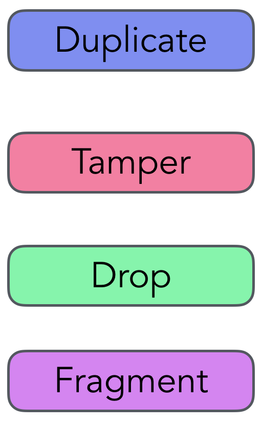
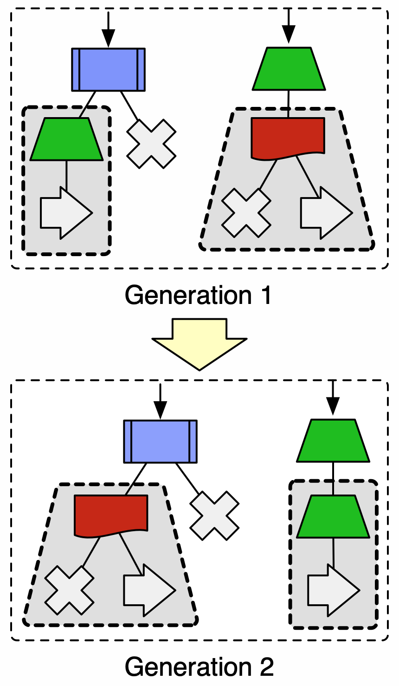
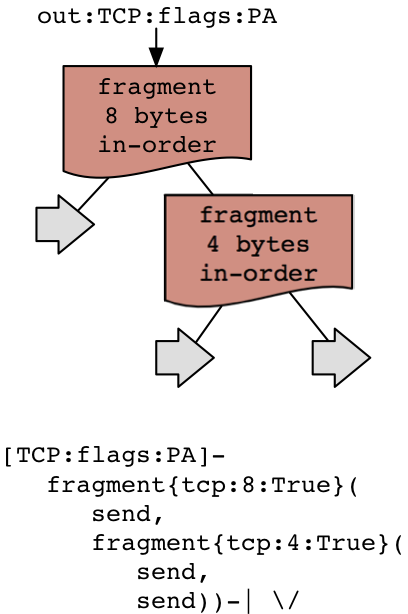
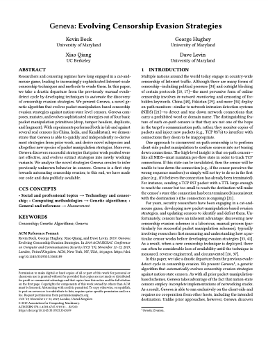

|  |
Geneva is a genetic algorithm, a form of biologically-inspired artificial intelligence. Much like how biological systems compose simple building blocks (the A, T, C, and G of DNA), Geneva generates new algorithms by composing very basic ways of manipulating packets. It can copy, alter, drop, or split-up packets. Geneva composes these individual actions into "action trees." |
|  |
Geneva creates many random individual strategies and runs each of them against real censors. Based on how successful they are (and other factors), it assigns a numerical fitness to each individaul. The most fit survive from one generation to the next, and Geneva mutates and mates strategies to create new ones. |
|  |
Unlike prior work, we do not manually create censorship evasion strategies: Geneva finds them automatically. Then, after Geneva finds how to evade censorship, we analyze its output to learn more about how censors work. This has led to interesting insights, like how China's great firewall synchronizes its state. Sometimes, like with the strategy to the left, we conclude that Geneva has found a bug in the censor. |
|  |
For more information, see our publications. |